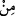
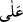
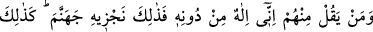
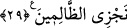

O’nun azameti ve mehâbetidir. “İşfâk”da ise korkulan husûsa bakılır, dikkat edilir. Bu
ise korktuğunun durumuna îtina göstermesi ve ona hoşnut olmayacağı bir şeyin
gelmesinden emin olmamasıdır. Yine işfâk, “__WORD__” ve “__WORD__ harflerinin her ikisi ile de
kullanılır. “Min” harfi ile kullanıldığında korku mânâsı, îtinâ/ihtimam mânâsından daha
açık olur. “Alâ” harfi ile kullanıldığında îtinâ/ihtimam mânâsı, korku mânâsından daha
açık olur.”
Rivâyet edildiğine göre Rasûlullah (s.a.), mi‘rac gecesinde Cebrâil (a.s.)’ın Allah
korkusundan düşüp keçe gibi yığıldığını görmüştür.[155] Yine Rasûlullah (s.a.)’den
rivâyete göre İsrâfil’ın bir kanadı doğuda, bir kanadı batıda ve arş da onun kanatları
üzerindedir. Buna rağmen o, bazen bir serçe yavrusu kadar küçülür.[156]
Havf ve haşyet, gönül ehli olanların süsüdür
Kendini güvende hissedip pervasızlık etmek ise gafillerin şânıdır
29. Onlardan her kim: “İlah O değil, benim!” derse, biz onu cehennemle
cezalandırırız. İşte biz, zâlimlere böyle ceza veririz!
“Onlardan” meleklerden “her kim,” Allâh’a karşı haddi aşıp da: “İlah O değil,
benim!” derse,” diğer suçlulara yaptığımız gibi “biz onu cehennemle cezalandırırız.”
O zaman daha önce zikredilen üstün sıfatları ve hoşnud olunan güzel amelleri onlara bir
fayda sağlamaz. Bu âyet, rubûbiyyet iddiâsında bulunanları tehdid ederek aslında
şirkten vazgeçmeleri için müşrikleri tehdiddir.
Söylendiği farz edilen bu söz, farz-ı muhal kabilindendir. Bu onların böyle bir iddiâda
bulunduklarına delâlet etmez. Bazıları burada bahsedilenin İblis olduğunu
söylemişlerdir. Nitekim o, ulûhiyyette ortaklık iddiâ etmiş ve kendisine ibâdete
çağırmıştır. Ancak bu îzah onun meleklerden sayılmasını gerektirir.
“İşte biz, zâlimlere böyle ceza veririz!” Yâni bu korkunç cezâ gibi eşyayı âid
olmadığı yerlere koyanları, Allâh’a ortak koşarak ve ulûhiyet iddiâsında bulunarak
hadlerini aşanları böylece cezâlandırırız.
Âyette “kezâlike (işte böyle)”nin öne alınmasının ifâde ettiği hasr eksikliğe nisbetle
değil, ziyâdeliğe nisbetledir. Yâni vereceğimiz cezâ bundan daha az olmaz demektir.
Cezâ, hayırsa hayır, şer ise şer yeterli olarak verilen karşılıktır.
et-Te’vîlâtü’n-Necmiyye’de (27-29. âyetlerin tefsîrinde) şöyle der: “O’ndan önce
konuşmazlar” buyruğunda onların ihtiyaçlardan uzak olarak yaratıldıklarına işâret